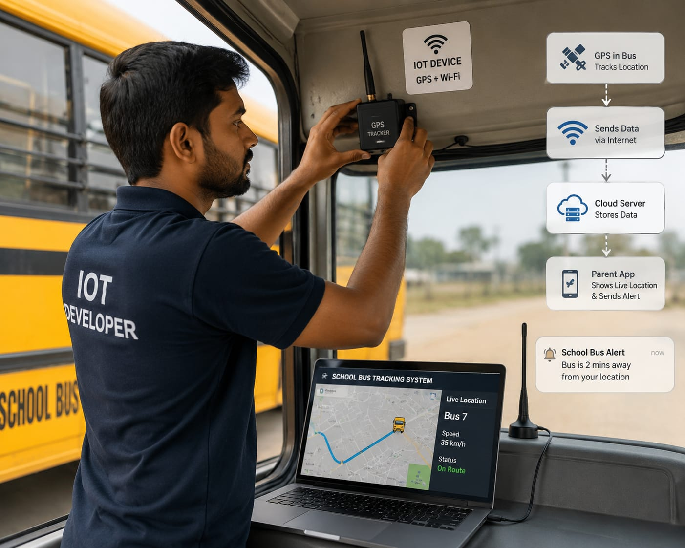

- Students usually wait outside their house for the school bus.
- Imagine if parents could see on their mobile phone exactly where the school bus has reached.
- When the bus is close to the student's home, a notification automatically appears on the parent's phone.
- This helps parents know the right time to take their child outside for the bus.
- To make this possible, a smart system with GPS, internet connectivity, and software is installed in the bus.
- This smart connected system is created by an IoT Developer.
- 👉 In simple words: IoT Developers create smart systems that connect devices and allow them to share information through the internet.
IoT Developer
👨💻 What Do They Do?

🎓 Courses to Become an IoT Developer
After completing 10th, you can start with a diploma in electronics or computer-related fields to enter the IoT domain early.
Diploma in Electronics and Communication Engineering
Duration: 3 Years
Eligibility: Class 10 with Science and Mathematics
Minimum Marks: 35%–50% aggregate
Age Limit: Minimum 14–15 years
Exam: State Polytechnic Entrance Exams (e.g., JEECUP, AP POLYCET)
Diploma in Computer Science Engineering
Duration: 3 Years
Eligibility: Class 10 pass
Minimum Marks: 35%–50% aggregate
Age Limit: Minimum 14–15 years
Exam: State-level entrance exams (e.g., MSBTE, Delhi CET)
📝 Exam Details
(Click on the exam name to see full details)
State Polytechnic Entrance ExamsNote: Admission may be based on entrance exams or 10th marks depending on the state or institution.
After completing 12th with PCM, you can pursue a degree in Computer Science or Electronics to enter the IoT field.
B.Tech in Computer Science (Specialization in IoT)
Duration: 4 Years
Eligibility: 10+2 with Physics, Chemistry, and Mathematics (PCM)
Minimum Marks: 45%–60% aggregate
Age Limit: 17–25 years
Exam: JEE Main, VITEEE, SRMJEEE, KIITEE
B.Tech in Electronics and Communication Engineering
Duration: 4 Years
Eligibility: 10+2 with PCM subjects
Minimum Marks: 45%–60% aggregate
Age Limit: 17–25 years
Exam: JEE Main, JEE Advanced, MHT CET, KCET
📝 Exam Details
(Click on the exam name to see full details)
JEE Main JEE Advanced State Entrance Exams University Entrance ExamsNote: Admission to top colleges is mainly through entrance exams, while some private colleges offer merit-based admission.
Important Note: Computer Science helps with software and app development, while Electronics focuses on hardware and sensors—both are important for IoT careers.
After completing a diploma, you can directly enter the 2nd year of B.Tech through lateral entry and continue your journey in IoT.
B.Tech in Computer Science / IoT (Lateral Entry)
Duration: 3 Years (starts from 2nd year)
Eligibility: 3-year Diploma in Computer Science or IT
Minimum Marks: 45%–50% in Diploma
Age Limit: Minimum 18 years
Exam: State Lateral Entry Tests (JELET, ECET, LEET)
B.Tech in Electronics and Communication Engineering (Lateral Entry)
Duration: 3 Years (starts from 2nd year)
Eligibility: 3-year Diploma in ECE or Electrical Engineering
Minimum Marks: 45%–50% in Diploma
Age Limit: Minimum 18 years
Exam: State Lateral Entry Tests (JELET, ECET)
📝 Exam Details
(Click on the exam name to see full details)
State Lateral Entry Entrance ExamsNote: Lateral entry allows diploma students to directly join the 2nd year of engineering programs.
Important Note: Choose Computer Science if you like coding and software, or Electronics if you enjoy working with circuits and hardware—both are important in IoT.
After completing your degree, you can specialize in IoT through higher studies or professional courses to advance your career.
M.Tech in Internet of Things / Smart Systems
Duration: 2 Years
Eligibility: B.E./B.Tech in CSE, IT, ECE, or EEE
Minimum Marks: 55%–60% or 6.5+ CGPA
Age Limit: Generally no upper age limit
Exam: GATE (CS or EC paper)
PG Diploma in Internet of Things (Professional Course)
Duration: 6 Months to 1 Year
Eligibility: B.E./B.Tech in any technical field
Minimum Marks: 50%–55% in graduation
Age Limit: Usually up to 30–35 years
Exam: C-CAT (for CDAC) or institutional interviews
📝 Exam Details
(Click on the exam name to see full details)
GATE C-CAT (CDAC)Note: GATE is required for top M.Tech colleges, while PG diploma courses may require entrance tests or interviews.
Important Note: M.Tech is best for deep technical knowledge and research, while PG Diploma courses are faster and more industry-focused for job readiness.
Note:
Age limits, marks, and admission process may vary depending on the college or state.
These courses are available in many colleges and universities across India.
You can choose colleges based on your location, budget, and entrance exams.
🏛️ Top Colleges for IoT Developer
(Tap on a college to visit the official website)
After 10th Pass (Diplomas)
Government Polytechnic, Pune PSG Polytechnic College, Coimbatore Government Polytechnic, Mumbai MEI Polytechnic, Bangalore Sri Ramakrishna Polytechnic College, CoimbatoreAfter 12th Pass (Bachelor's Degrees)
Vellore Institute of Technology (VIT), Vellore Amrita Vishwa Vidyapeetham, Coimbatore Manipal Institute of Technology (MIT), Manipal SRM Institute of Science and Technology, Chennai Nitte Meenakshi Institute of Technology (NMIT), BangaloreAfter Diploma (Lateral Entry)
Delhi Technological University (DTU), New Delhi PSG College of Technology, Coimbatore Anna University, Chennai College of Engineering Pune (COEP), Pune Jadavpur University, KolkataAfter Graduation (Master's Degrees / PG Diplomas)
Indian Institute of Technology (IIT) Hyderabad, Hyderabad Birla Institute of Technology and Science (BITS), Pilani Centre for Development of Advanced Computing (C-DAC), Bangalore National Institute of Technology (NIT), Jamshedpur National Institute of Electronics & Information Technology (NIELIT), CalicutSTEP 1
Imagine you are working as an IoT Developer.
STEP 2
Your company wants to build a smart home security system.
STEP 3
You connect smart cameras and sensors to the internet.
STEP 4
You write software that collects information from these devices.
STEP 5
You connect the system to a mobile app.
STEP 6
If someone enters the house, the app sends an alert to the owner.
STEP 7
If you enjoy smart devices, coding, and solving real-world problems, this career may be right for you.
Where do IoT Developers work? (Job Roles + Growth)
These are some roles you can explore in IoT Development.
You usually start with beginner roles and grow with experience.
🔵 Beginner Roles
🧪
Junior Firmware Tester
(After Short-Term Certification / Diploma)
They run tests to check whether device software works correctly.
💻
IoT Associate Developer
(After Diploma / B.Tech)
They write basic code to collect data from sensors.
🔵 Mid-Level Roles
📡
IoT Embedded Engineer
(After B.Tech + Experience)
They program microchips and connect devices to wireless networks.
☁️
IoT Cloud Developer
(After B.Tech + Experience)
They build cloud systems that store and process device data.
🟣 Advanced Roles
🏙️
IoT Solutions Architect
(After M.Tech / Advanced Specialization)
They design large networks connecting thousands of smart devices.
🌍
VP of IoT Systems
(After Advanced Executive Program + Experience)
They lead teams that build large-scale smart infrastructure projects.
📱
IoT & Smart Device Companies
Build connected devices and sensor systems.
🏠
Smart Home Technology Companies
Create automated home devices and appliances.
🏭
Industrial Automation Companies
Develop smart factory and monitoring systems.
🚗
Automotive Technology Companies
Build connected and intelligent vehicle systems.
☁️
Cloud & Technology Companies
Manage platforms that process device data.
🏙️
Smart City Projects
Develop intelligent infrastructure and services.
(Click Yes or No for each question)
1. Have you ever used a smartwatch or fitness band to track your steps, heart rate, or sleep?
2. Have you ever wondered how a smartwatch knows how many steps you have walked?
3. Do you like to know how smart devices work?
4. Would you like to learn how engineers create smart devices that can collect and share information through the internet?
5. Imagine you create a smart watch that can count steps, monitor heart rate, and send information to a mobile app. Does this sound exciting to you?